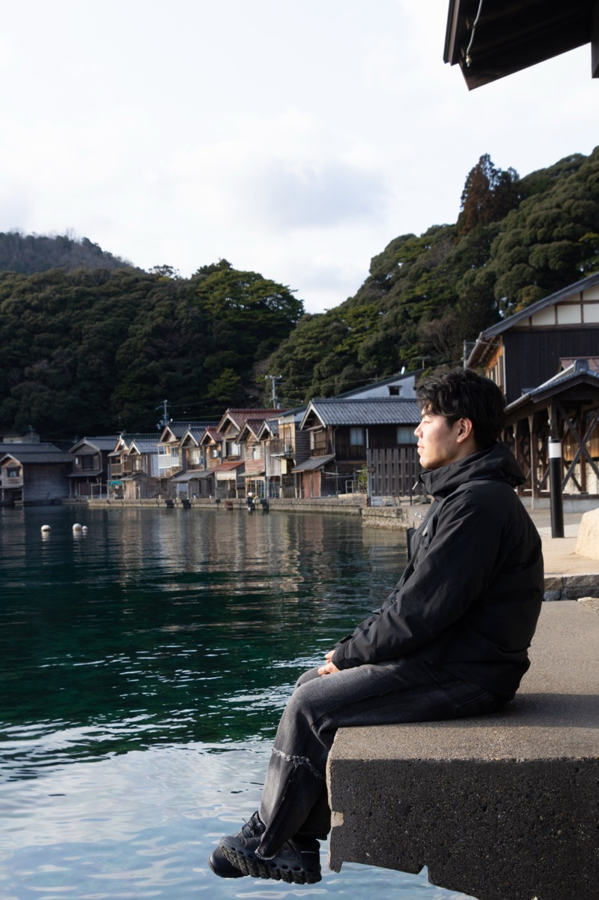
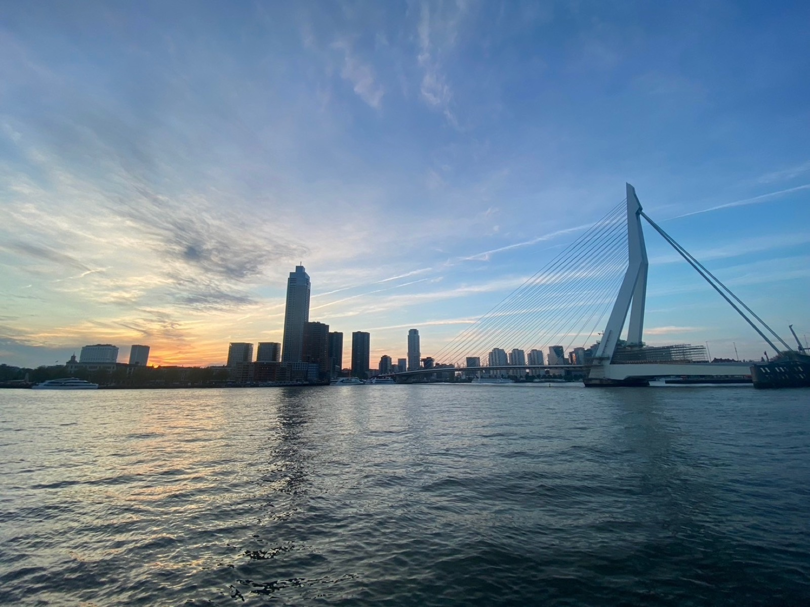
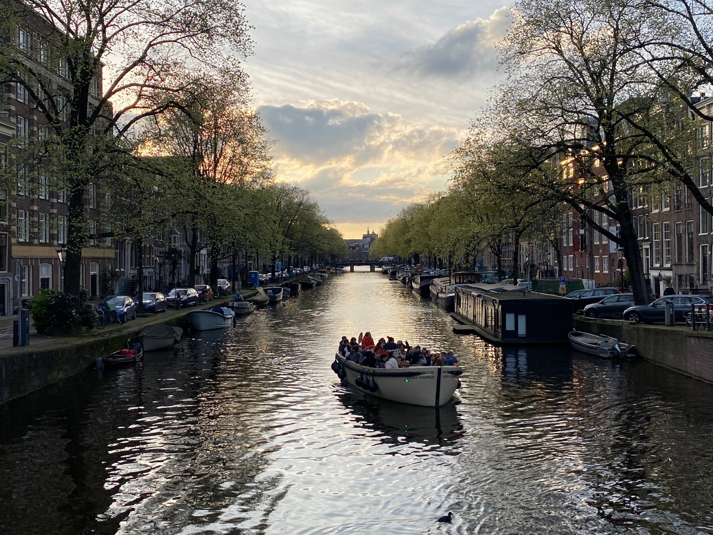
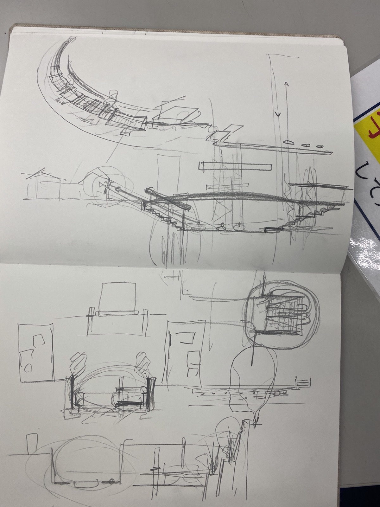

Architect · Researcher · Tokyo
Shin SUZUKI

Utrecht, Netherlands — 2023
"Reading the land through its context and history,
creating architecture that weaves the future"
I am a doctoral candidate at the Department of Architecture, Institute of Science Tokyo, under the supervision of Prof. Ryo Murata. My research focuses on collaborative planning processes, spatial governance, and the built environment, with a particular interest in the Dutch context.
Through comparative analysis between Japan and the Netherlands, I investigate how participatory and co-design approaches can reshape spatial planning practice in waterfront and heritage contexts. From 2023 to 2024, I lived in Amsterdam and worked as an intern at NL architects.

Rotterdam, NL — 2024

Amsterdam, NL — 2023

Graduation Design Sketches — 2022
Career & Education
TU Delft 🇳🇱 — Guest Researcher
Delft University of Technology, Netherlands
Institute of Science Tokyo
formerly Tokyo Institute of Technology
Ryo Murata Lab — Doctoral Program
Japan Science and Technology Agency
Science Tokyo Support Program for Doctoral Students
Program for Development of Next-Generation Front-Runners with Comprehensive Knowledge and Humanity (for Science and Engineering fields)
Institute of Science Tokyo — M.Eng
formerly Tokyo Institute of Technology
Master of Engineering — Ryo Murata Lab
NL architects 🇳🇱 — Internship
Based in Amsterdam, Netherlands
Tokyo Institute of Technology
Koichi Yasuda Lab — Master's Program
Hosei University — B.Eng
Bachelor of Engineering — Tetsuo Kobori Lab
Collaborative Processes
Collaborative ProcessesExamining participatory and co-design methodologies in architecture and urban planning, and their influence on spatial outcomes.
Built Environment
Built EnvironmentAnalyzing the interplay between physical space, governance structures, and social dynamics within the constructed environment.
Spatial Planning
Spatial PlanningInvestigating planning frameworks and policy tools that mediate between design intentions and lived spatial experience.
Netherlands Context
Netherlands ContextEngaging with Dutch spatial planning traditions as a reference model for collaborative and adaptive planning practices.
-
2026
25th Touka Award → Detail
Master's Thesis: "Diversity of Practical Thinking on the Built Environment in Agendas Published by Dutch Government Agencies"
-
2026
Maeda Engineering Foundation — Special Research Theme Adopted
Suzuki S., Kawamata Y. "Research on conservation and collaborative processes in waterfront spaces and industrial heritage architecture related to water transportation — Through case studies in London, Amsterdam, Nantes, and Hamburg"
-
2025
Young Researcher Excellent Presentation Award, Japan Architecture
-
2025
Maeda Engineering Foundation — Special Research Theme Adopted
Suzuki S., Seike Y., Kawamata Y. "Research on value judgment processes in conservation and utilization of railway freight yards in the UK, Italy, and Belgium"
-
2023
Shinjuku Mirai Idea Competition "Noren Mitsuke"
Excellence Award + Kagurazaka Architecture Prize
-
2022
Graduation Design "Boating Urbanism — Water and City from Sotobori"
- Hosei University Special Jury Award (Ryu Mitarai Prize)
- Design Review 2022: Selected 70
- National Joint Graduation Exhibition "SOTSU 22": Selected 55
- Historical Space Reconstruction Competition: Selected 17
3D Modeling & Visualization
CAD & Drawing
Adobe Creative Suite
Languages
- 07.08 — SPRING Four-University Joint Research Presentation (Hitotsubashi University). Presented research and engaged in interdisciplinary discussions across humanities, sciences, and cross-disciplinary fields with participants from Ochanomizu University, Tokyo University of Foreign Studies, Hitotsubashi University, and Institute of Science Tokyo — four universities united under FLIP (Future Leading Innovation Partnership), a consortium established in July 2025 to advance interdisciplinary research and develop next-generation leaders.
- International Interdisciplinary Workshop on Inbanuma Swamp, University of Tsukuba
- 11.15 — Tour guide at a public workshop organized by the Tokyo Metropolitan Government's Urban Development Bureau, representing Sotobori Shimin Juku students. Uploaded to the Bureau's official YouTube channel. ▶ Watch
- Vitra Hanami Party
- Overseas Internship Talk @Online
- 10.04 — Symposium "Learning from ADAPTIVE REUSE in the Netherlands" (Hokkaido University). Served as consecutive interpreter for architect Jarrik Ouburg (HOH Architecten) and contributed to symposium management.
- 14th Water Jazz Concert "Kanade" (Executive Committee: Deputy Representative)
- Graduation Design Study Session
- New M2 Hanami Party
- My Career Path @Online
- 13th Water Jazz Concert "Kanade" (Executive Committee: Deputy Representative)
- Entrance Exam Guidance @Online
- Hosei University Volunteer Exhibition (Planning: Representative)
- Sotobori Walk (Planning + Tour Guide)
- Graduation Thesis Presentation (Planning: Representative)
- 12th Water Jazz Concert "Kanade" (Executive Committee: Representative)
- Louis Kahn Lecture Series (Planning & Management)
- JHBS Project Design Competition (Planning: Assistant)
- Architecture Newcomer Competition Briefing @Online
Let's collaborate
建築と研究の交差点で、対話を始めましょう。
- Email suzuki.s.7a2c@m.isct.ac.jp
- LinkedIn Shin SUZUKI
- Instagram @suzushin0630
- X / Twitter @suzushin0630
- GitHub Suzushin0630